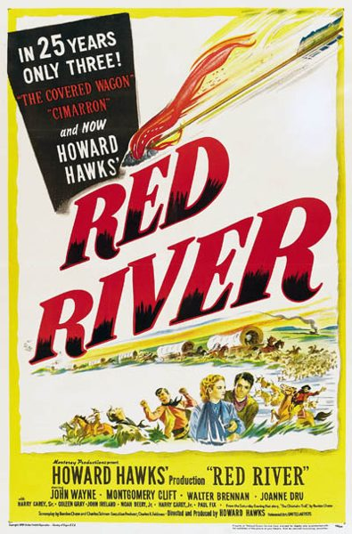

Red River
Starring: John Wayne, Montgomery Clift, Walter Brennan
Director: Howard Hawks, Arthur Rosson
Writer: Borden Chase, Charles Schnee
Producer: Borden Chase, Charles Schnee
Red River is a 1948 American Western film, directed and produced by Howard Hawks and starring John Wayne and Montgomery Clift. It gives a fictional account of the first cattle drive from Texas to Kansas along the Chisholm Trail. The dramatic tension stems from a growing feud over the management of the drive between the Texas rancher who initiated it (Wayne) and his adopted adult son (Clift).
Trivia
- Nominated for: Academy Award for Best Story; Academy Award for Best Film Editing.
- Footage from Red River was later incorporated into the opening montage of Wayne's last film, The Shootist, to illustrate the backstory of Wayne's character.
- The film was nominated for Academy Awards for Best Film Editing (Christian Nyby) and Best Writing, Motion Picture Story (Borden Chase).
- Had he done so, he thought it would have made a lot more money.
Filming Locations
- California
- Mexico
- Arizona
- Red River was filmed in 1946, copyrighted in 1947, and widely released on September 17, 1948.
Previous Showings
4 Runs • 3 Festivals
All runs on record (4):
- June 24 - 29, 1995w/ High Noon
- April 22, 2009Winter 2009w/ Angel and the Badman
- June 1 - 3, 2012Howard Hawksw/ O. Henry's Full House
- October 30 - November 2, 2025Classic Westernsw/ Rio Bravo